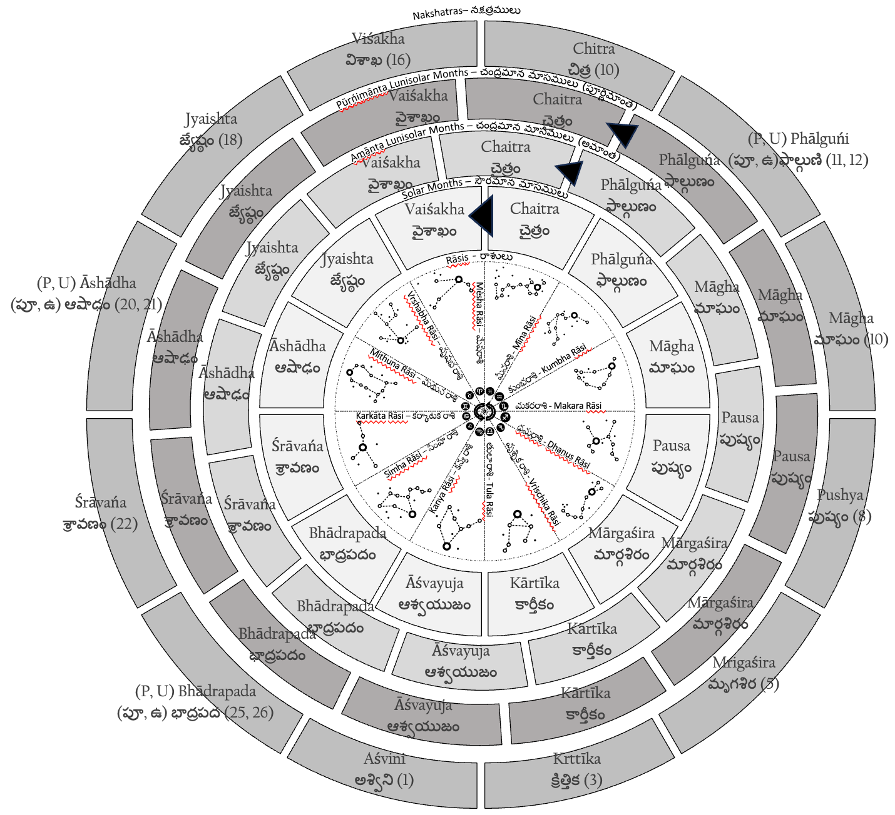

Panchanga Tantra: The Magic of the Indic Calendar System

Foreword
Third Edition (2023)
This is a “20th anniversary edition” of a thesis I wrote in 2002 for the Undergraduate Research Opportunities Programme (UROP), as part of my mathematics minor in the National University of Singapore. This is also a word-for-word republishing of the thesis, but with updates to embed graphics and tables within the text. All errors (if any) are mine, and have existed for 19 years.
For the longest time, this thesis was up on my then supervisor, Dr Helmer Aslaksen’s website at the Mathematics Department’s webpage. During this time, a great many had downloaded the PDF, but very few presumably understood it. For, this undergrad thesis found it its way to websites talking about dark magic and other related mystical concepts. Probably they got confused with the “tantra” in the title. Didn’t help that I made this mystical-looking, but perfectly scientific, graphic alluding to kaala chakra’s that would presumably sound woo-woo to unsuspecting audiences. Incidentally, I just re-did this graphic (above) to more exacting design standards, and perhaps would warrant another detailed explanation.
Dr Aslaksen returned to Oslo many many moons ago (pun intended). His old webpage at NUS’ website was still active for many years later, but now that it too has gone, I’m now back on the Internet to say this: nothing tantric about it. I was just punning between the Sanskrit terms ‘panchatantra’ and ‘panchangam’. In fact, this is all mathematic exploration and research, by way of Vedanga Jyotisa, Surya Siddhanta, and modelling all of those principles in Java and LISP. This is me doing that roots thing but via math. This is me claiming expertise in Indic, Chinese and Islamic calendars, of being able to tell when Chinese New Year and Deepavali can fall. Akshay researching kshaya months, if you will. That is all there is to it. Magical, but no black magic.
There is one literary conceit, though.
Second Edition (2002)
The fable of Apara Ganita and the Mystical Garden of Enchanted Numbers is obviously fictional. The inspiration is Leelavati Ganitam, a chapter in the ancient mathematical treatise, the Siddhanta Siromani, written by Bhaskaracharya in 1150 CE. The Leelavati Ganitam is fascinating not only for its treatment of indeterminate analysis and a method to solve Pell’s Equation, but also, as a Canadian university’s website on mathematical history puts it1, for its poetic conversation between the narrator and a narratee named Leelavati. The similarity between this poetic construct and the conversation between Apara Ganita and the dwara palika is probably noticeable.
Frame stories are not common for scientific research papers, but they certainly have a historical precedent.
Prologue: The Mystical Garden of Enchanted Numbers
_Once upon a time, in the magical mystical city of Suvarnapuri2, there lived a student called Apara Ganita3. Apara Ganita was virtuous and devoted to his sciences. Having spent considerable amount of time learning the shastras from his guru, he was surprised when one day his guru called him up. “You have performed well, O sishya⁴ mine”, the guru said, “but the time has now come for you to take leave”.
Apara Ganita was at once sad, for he had learned a lot under him. But he remained quiet and continued listening to his guru.
“Listen, Apara Ganita, I shall now tell you something that my guru told me when I finished my studies. For, a study in Ganita Sastra (mathematics) is not complete, unless one visits the Mystical Garden of Enchanted Numbers”
“You must go and find this place for your education to be truly complete”.
And so Apara Ganita went about searching for this place. Indeed, after much travelling and searching, he was finally shown the way to the Mystical Garden of Enchanted Numbers.
And lo, what a beautiful sight it was! For it was situated in the midst of a lush green valley, saddled by mountains on either side. Down there, Apara Ganita could see famous mathematicians expositing their theories and skills, like hawkers on a bazaar street. There was Euclid standing on a rectangle, explaining the beauty of the Golden Ratio in classic Greco Caldean architecture. Pythagoras was standing next to him as a part of the Greek exhibit, explaining the virtues of a right-angled triangle to a curious crowd. From the far end of the Orator’s Corner, Zhao Jun Qing looked at Pythagoras and smiled. He was himself holding a right-angled triangle and was explaining his proof for the Pythagoras’ Theorem. Mandelbrot was decorating the Garden with flowers of fractallate beauty. John Nash was close by; he was pointing at a group of women, probably explaining game theory to onlookers around him. In another corner of the garden, (Sector 1729), Srinivasa Ramanujan was vociferously arguing a point with Thomas Hardy.
It was such an environment that Apara Ganita wanted to enter.
However, as he was about to enter through the great doors guarding the garden, he heard a sonorous voice calling out his name.
He stopped and turned around to see who was calling him only to saw a young woman coming towards him. With eyes burning with curiosity and a voice sweeter than a nightingale, she said: -
O Student Erudite, What is it that you study tonight?
Just what I needed, a mystical_ dwara palika _(female door keeper), he said to himself. Shaking his head in wry amusement, he looks at the books in his hand and takes a deep breath to begin his dissertation.